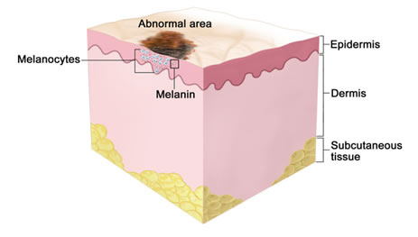
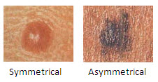
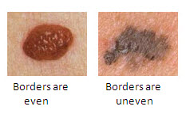
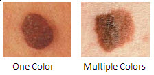
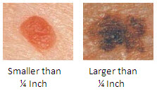
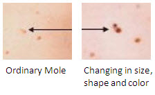

refernace : http://www.skincancer.org/skin-cancer-information/melanoma
The most dangerous form of skin cancer, these cancerous growths develop when unrepaired DNA damage to skin cells (most often caused by ultraviolet radiation from sunshine or tanning beds) triggers mutations (genetic defects) that lead the skin cells to multiply rapidly and form malignant tumors.These tumors originate in the pigment-producing melanocytes in the basal layer of the epidermis. Melanomas often resemble moles; some develop from moles. The majority of melanomas are black or brown, but they can also be skin-colored, pink, red, purple, blue or white. Melanoma is caused mainly by intense, occasional UV exposure (frequently leading to sunburn), especially in those who are genetically predisposed to the disease. Melanoma kills an estimated 8,790 people in the US annually.

If melanoma is recognized and treated early, it is almost always curable, but if it is not, the cancer can advance and spread to other parts of the body, where it becomes hard to treat and can be fatal. While it is not the most common of the skin cancers, it causes the most deaths. The American Cancer Society estimates that at present, about 120,000 new cases of melanoma in the US are diagnosed in a year. In 2010, about 68,130 of these were invasive melanomas, with about 38,870 in males and 29,260 in women.
Warning Signs: The ABCDEs of Melanoma
Moles, brown spots and growths on the skin are usually harmless but not always. Anyone who has more than 100 moles is at greater risk for melanoma. The first signs can appear in one or more atypical moles. That's why it's so important to get to know your skin very well and to recognize any changes in the moles on your body. Look for the ABCDE signs of melanoma, and if you see one or more, make an appointment with a physician immediately.
|  |
A - Asymmetry
If you draw a line through this mole, the two halves will not match
|
|  |
B - Border
The borders of an early melanoma tend to be uneven. The edges may be scalloped or notched.
|
|  |
C - Color
Having a variety of colors is another warning signal. A number of different shades of brown, tan or black could appear. A melanoma may also become red, blue or some other color.
|
|  |
D - Diameter
Melanomas usually are larger in diameter than the size of the eraser on your pencil (1/4 inch or 6 mm), but they may sometimes be smaller when first detected.
|
|  |
E - Evolving
Any change — in size, shape, color, elevation, or another trait, or any new symptom such as bleeding, itching or crusting — points to danger.
|
|